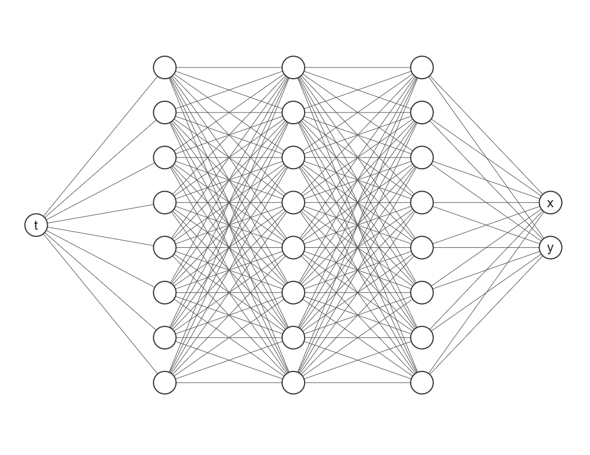

System of Differential Equations#
# !pip install deepxde # Run this line if you are in Google Colab
Let’s motivate this section with the Lotka-Volterra equations, also known as the predator-prey equations, are a pair of first-order nonlinear differential equations, frequently used to describe the dynamics of biological systems in which two species interact. The populations change through time according to the pair of equations: $\( \begin{align*} \dfrac{dx}{dt} &= \alpha x - \beta xy \\ \dfrac{dy}{dt} &= -\gamma y + \delta xy \end{align*} \)$ where
\(x\) is the number of prey;
\(y\) is the number of some predator;
\({\tfrac {dy}{dt}}\) and \({\tfrac {dx}{dt}}\) represent the instantaneous growth rates of the two populations;
\(t\) represents time;
\(\alpha\), \(\beta\), \(\gamma\) and \(\delta\) are positive real parameters describing the interaction of the two species.
We will need the following packages, numpy for array operations, matplotlib for visualizations and scipy for getting for getting a numerical solution with Runge-Kutta method.
import numpy as np
import matplotlib.pyplot as plt
from scipy.integrate import solve_ivp
For this module we will use the following values of \(\alpha\), \(\beta\), \(\gamma\) and \(\delta\).
alpha = 2 / 3
beta = 4 / 3
gamma = 1
delta = 1
It is important to decide a time invertal where we will working on. As an example let’s consider between \(t=0\) and \(t=1\). As well as initial conditions \(x(0)\) and \(y(0)\).
t_initial = 0
t_final = 10
x0 = 1.2
y0 = 0.8
Runge-Kutta#
Note we can modularize this step creating a function, for instance, runge_kutta which takes as input an array of time steps, initial conditions and the values of the parameters that describe the interaction between the two species.
def runge_kutta(
t,
x0,
y0,
alpha,
beta,
gamma,
delta
):
def func(t, Y):
x, y = Y
dx_dt = alpha * x - beta * x * y
dy_dt = - gamma * y + delta * x * y
return dx_dt, dy_dt
Y0 = [x0, y0]
t_span = (t[0], t[-1])
sol = solve_ivp(func, t_span, Y0, t_eval=t)
x_true, y_true = sol.y
return x_true, y_true
Now, let’s generate an time array and solve the initial value problem.
t_array = np.linspace(t_initial, t_final, 100)
x_rungekutta, y_rungekutta = runge_kutta(t_array, x0, y0, alpha, beta, gamma, delta)
We suggest you to plot your results since it can give you better insights of your simulations or predictions.
plt.plot(t_array, x_rungekutta, color="green", label=r"$x(t)$ Runge-Kutta")
plt.plot(t_array, y_rungekutta, color="blue", label=r"$y(t)$ Runge-Kutta")
plt.legend()
plt.xlabel(r"$t$")
plt.title("Lotka-Volterra numerical solution using Runge-Kutta method")
plt.show()
PINNs for solving ODEs#
For our Lotka-Volterra system the solution \(u\) will be a vector such that $\( u(t) = (x(t), y(t))^\top \)$ and there are not boundary conditions, only initial conditions.
We want to train a network that looks like this

The most important package is deepxde, which allows us to implement Physic-Informed Neural Networks approaches with a few lines of code.
import deepxde as dde
from deepxde.backend import tf
2023-06-05 03:30:26.436559: I tensorflow/tsl/cuda/cudart_stub.cc:28] Could not find cuda drivers on your machine, GPU will not be used.
2023-06-05 03:30:26.487307: I tensorflow/tsl/cuda/cudart_stub.cc:28] Could not find cuda drivers on your machine, GPU will not be used.
2023-06-05 03:30:26.488422: I tensorflow/core/platform/cpu_feature_guard.cc:182] This TensorFlow binary is optimized to use available CPU instructions in performance-critical operations.
To enable the following instructions: AVX2 AVX512F FMA, in other operations, rebuild TensorFlow with the appropriate compiler flags.
2023-06-05 03:30:27.288824: W tensorflow/compiler/tf2tensorrt/utils/py_utils.cc:38] TF-TRT Warning: Could not find TensorRT
Using backend: tensorflow.compat.v1
Other supported backends: tensorflow, pytorch, jax, paddle.
paddle supports more examples now and is recommended.
WARNING:tensorflow:From /opt/hostedtoolcache/Python/3.8.16/x64/lib/python3.8/site-packages/tensorflow/python/compat/v2_compat.py:107: disable_resource_variables (from tensorflow.python.ops.variable_scope) is deprecated and will be removed in a future version.
Instructions for updating:
non-resource variables are not supported in the long term
WARNING:tensorflow:From /opt/hostedtoolcache/Python/3.8.16/x64/lib/python3.8/site-packages/deepxde/nn/initializers.py:118: The name tf.keras.initializers.he_normal is deprecated. Please use tf.compat.v1.keras.initializers.he_normal instead.
ODE Residuals#
Since we are trying to embed the physics onto the neural networks we need to define
def ode(t, Y):
x = Y[:, 0:1]
y = Y[:, 1:2]
dx_dt = dde.grad.jacobian(Y, t, i=0)
dy_dt = dde.grad.jacobian(Y, t, i=1)
return [
dx_dt - alpha * x + beta * x * y,
dy_dt + gamma * y - delta * x * y
]
Here t is the indepent variable and Y is an array with two columns (since our system considers two equations). To define the first derivative is as easy as using dde.grad.jacobian, just be sure about the component i, in this case we decided i=0 corresponds to the variable \(x(t)\) and i=1 to \(y(t)\).
Initial conditions#
And now we need to declare this element for our neural network, if not, the algorithm wouldn’t know where to make the estimations.
geom = dde.geometry.TimeDomain(t_initial, t_final)
Then we have to create a function for defining boundaries, since our geometry it is only on time we will use the default one, don’t worry about it.
def boundary(_, on_initial):
return on_initial
And then we have to tell to our algorithm these are the initial conditions for the learning process
ic_x = dde.icbc.IC(geom, lambda x: x0, boundary, component=0)
ic_y = dde.icbc.IC(geom, lambda x: y0, boundary, component=1)
Data object#
Everything related to the differential equations and initial conditions has to be inside a new object dde.data.PDE (do not worry, it also consider systems of ordinary differential equations).
data = dde.data.PDE(
geom,
ode,
[ic_x, ic_y],
num_domain=512,
num_boundary=2
)
In order to test our model we need more points, we considered 512 points inside our domain with num_domain=512. Finally, since we are working on a time domain there are only two points in its boundary (num_boundary=2).
Neural Network#
It is time for choosing a neural network architecture. For simplicity, we will use a Fully-connected neural network (`dde.nn.FNN’). The most important things are:
Input layer (the first one) needs only one node/neuron since our indepent variable is only time \(t\).
The output layer (the last one) nneds two nodes/neurons since we are working on a system of two equations.
Do not worry so much about the amount of layers or neurons in each hidden layer, as a rule of thumb error should decrease while you add more layers and neurons, but it will take more computational time. Activation functions and the initializer are more parameters the user must choose, usually Glorot normal works well as initializer. However, we would recommend you to try different activation functions, for example, relu, sigmoid or swish.
neurons = 64
layers = 6
activation = "tanh"
initializer = "Glorot normal"
net = dde.nn.FNN([1] + [neurons] * layers + [2], activation, initializer)
Model Object#
The library we are working with needs put everything together in a new object, but it is just one line of code.
model = dde.Model(data, net)
Training#
For training we will go with an Adam optimizer (a very popular one nowadays) and a learning rate of 0.001 (smaller learning rates may give you better results but it will take many more iterations).
Just for simplicity we will take 50000 iterations, but another rule of thumb it is that as you increase the number of iterations the loss value should decrease as well.
model.compile("adam", lr=0.001)
losshistory, train_state = model.train(iterations=50000, display_every=10000)
Compiling model...
Building feed-forward neural network...
'build' took 0.079270 s
/opt/hostedtoolcache/Python/3.8.16/x64/lib/python3.8/site-packages/deepxde/nn/tensorflow_compat_v1/fnn.py:116: UserWarning: `tf.layers.dense` is deprecated and will be removed in a future version. Please use `tf.keras.layers.Dense` instead.
return tf.layers.dense(
'compile' took 0.621320 s
Training model...
Step Train loss Test loss Test metric
0 [2.94e-02, 3.54e-04, 1.44e+00, 6.40e-01] [2.94e-02, 3.54e-04, 1.44e+00, 6.40e-01] []
2023-06-05 03:30:29.932520: I tensorflow/compiler/mlir/mlir_graph_optimization_pass.cc:353] MLIR V1 optimization pass is not enabled
---------------------------------------------------------------------------
KeyboardInterrupt Traceback (most recent call last)
Cell In[16], line 2
1 model.compile("adam", lr=0.001)
----> 2 losshistory, train_state = model.train(iterations=50000, display_every=10000)
File /opt/hostedtoolcache/Python/3.8.16/x64/lib/python3.8/site-packages/deepxde/utils/internal.py:22, in timing.<locals>.wrapper(*args, **kwargs)
19 @wraps(f)
20 def wrapper(*args, **kwargs):
21 ts = timeit.default_timer()
---> 22 result = f(*args, **kwargs)
23 te = timeit.default_timer()
24 if config.rank == 0:
File /opt/hostedtoolcache/Python/3.8.16/x64/lib/python3.8/site-packages/deepxde/model.py:633, in Model.train(self, iterations, batch_size, display_every, disregard_previous_best, callbacks, model_restore_path, model_save_path, epochs)
631 if iterations is None:
632 raise ValueError("No iterations for {}.".format(self.opt_name))
--> 633 self._train_sgd(iterations, display_every)
634 self.callbacks.on_train_end()
636 if config.rank == 0:
File /opt/hostedtoolcache/Python/3.8.16/x64/lib/python3.8/site-packages/deepxde/model.py:651, in Model._train_sgd(self, iterations, display_every)
646 self.callbacks.on_batch_begin()
648 self.train_state.set_data_train(
649 *self.data.train_next_batch(self.batch_size)
650 )
--> 651 self._train_step(
652 self.train_state.X_train,
653 self.train_state.y_train,
654 self.train_state.train_aux_vars,
655 )
657 self.train_state.epoch += 1
658 self.train_state.step += 1
File /opt/hostedtoolcache/Python/3.8.16/x64/lib/python3.8/site-packages/deepxde/model.py:540, in Model._train_step(self, inputs, targets, auxiliary_vars)
538 if backend_name == "tensorflow.compat.v1":
539 feed_dict = self.net.feed_dict(True, inputs, targets, auxiliary_vars)
--> 540 self.sess.run(self.train_step, feed_dict=feed_dict)
541 elif backend_name in ["tensorflow", "paddle"]:
542 self.train_step(inputs, targets, auxiliary_vars)
File /opt/hostedtoolcache/Python/3.8.16/x64/lib/python3.8/site-packages/tensorflow/python/client/session.py:968, in BaseSession.run(self, fetches, feed_dict, options, run_metadata)
965 run_metadata_ptr = tf_session.TF_NewBuffer() if run_metadata else None
967 try:
--> 968 result = self._run(None, fetches, feed_dict, options_ptr,
969 run_metadata_ptr)
970 if run_metadata:
971 proto_data = tf_session.TF_GetBuffer(run_metadata_ptr)
File /opt/hostedtoolcache/Python/3.8.16/x64/lib/python3.8/site-packages/tensorflow/python/client/session.py:1191, in BaseSession._run(self, handle, fetches, feed_dict, options, run_metadata)
1188 # We only want to really perform the run if fetches or targets are provided,
1189 # or if the call is a partial run that specifies feeds.
1190 if final_fetches or final_targets or (handle and feed_dict_tensor):
-> 1191 results = self._do_run(handle, final_targets, final_fetches,
1192 feed_dict_tensor, options, run_metadata)
1193 else:
1194 results = []
File /opt/hostedtoolcache/Python/3.8.16/x64/lib/python3.8/site-packages/tensorflow/python/client/session.py:1371, in BaseSession._do_run(self, handle, target_list, fetch_list, feed_dict, options, run_metadata)
1368 return self._call_tf_sessionprun(handle, feed_dict, fetch_list)
1370 if handle is None:
-> 1371 return self._do_call(_run_fn, feeds, fetches, targets, options,
1372 run_metadata)
1373 else:
1374 return self._do_call(_prun_fn, handle, feeds, fetches)
File /opt/hostedtoolcache/Python/3.8.16/x64/lib/python3.8/site-packages/tensorflow/python/client/session.py:1378, in BaseSession._do_call(self, fn, *args)
1376 def _do_call(self, fn, *args):
1377 try:
-> 1378 return fn(*args)
1379 except errors.OpError as e:
1380 message = compat.as_text(e.message)
File /opt/hostedtoolcache/Python/3.8.16/x64/lib/python3.8/site-packages/tensorflow/python/client/session.py:1361, in BaseSession._do_run.<locals>._run_fn(feed_dict, fetch_list, target_list, options, run_metadata)
1358 def _run_fn(feed_dict, fetch_list, target_list, options, run_metadata):
1359 # Ensure any changes to the graph are reflected in the runtime.
1360 self._extend_graph()
-> 1361 return self._call_tf_sessionrun(options, feed_dict, fetch_list,
1362 target_list, run_metadata)
File /opt/hostedtoolcache/Python/3.8.16/x64/lib/python3.8/site-packages/tensorflow/python/client/session.py:1454, in BaseSession._call_tf_sessionrun(self, options, feed_dict, fetch_list, target_list, run_metadata)
1452 def _call_tf_sessionrun(self, options, feed_dict, fetch_list, target_list,
1453 run_metadata):
-> 1454 return tf_session.TF_SessionRun_wrapper(self._session, options, feed_dict,
1455 fetch_list, target_list,
1456 run_metadata)
KeyboardInterrupt:
We can plot the loss history with a simple command.
dde.utils.external.plot_loss_history(losshistory)
Now, the prediction with PINNs
pinn_pred = model.predict(t_array.reshape(-1, 1))
x_pinn = pinn_pred[:, 0:1]
y_pinn = pinn_pred[:, 1:2]
plt.plot(t_array, x_pinn, color="green", label=r"$x(t)$ PINNs")
plt.plot(t_array, y_pinn, color="blue", label=r"$y(t)$ PINNs")
plt.legend()
plt.xlabel(r"$t$")
plt.title("Lotka-Volterra numerical solution using PINNs method")
plt.show()
As you can see both algorithms gave us almost identical results. One of the pros that we would like to point out about Physics-Informed neural networks is that for more complex systems you only need to change a very few things more, specifically residuals. Most of the numerical work is done automatically by machine learning libraries as TensorFlow, Torch, JAX, etc. so it is easy to scale it up, even better when we can take advantage of GPUs. For you, as an user, your challenge will be in pick suitable hyper-parameters (number of layers, number of neurons, activation function, number of iterations, etc.) but this also could be done by other algorithms, however these are out of the scope of this lesson.
Finally, we can compare both models and notice they are practically the same curves.
plt.plot(t_array, x_rungekutta, color="green", label=r"$x(t)$ Runge-Kutta")
plt.plot(t_array, y_rungekutta, color="blue", label=r"$y(t)$ Runge-Kutta")
plt.plot(t_array, x_pinn, color="red", linestyle="dashed", label=r"$x(t)$ PINNs")
plt.plot(t_array, y_pinn, color="orange", linestyle="dashed", label=r"$y(t)$ PINNs")
plt.legend()
plt.xlabel(r"$t$")
plt.title("Lotka-Volterra numerical solution comparison between Runge-Kutta and PINNs")
plt.show()